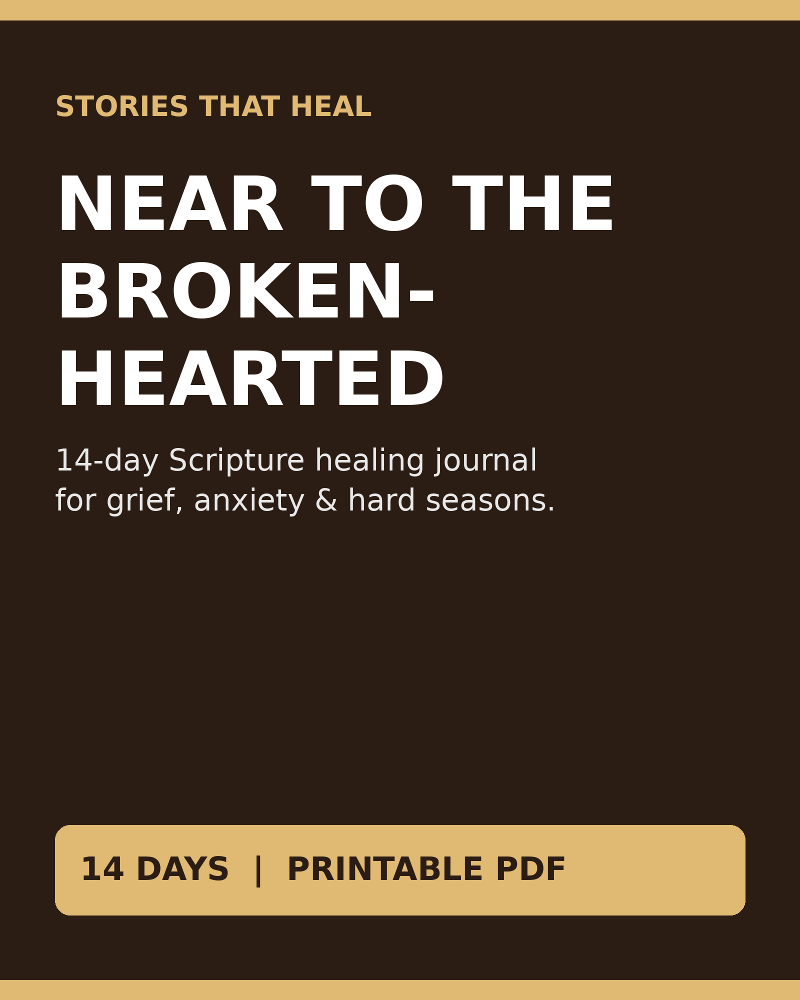

Fourteen days with the Scriptures people in pain keep returning to - one passage, three honest questions, a prayer starter and space to write each day.
Get the PDF — $7
New here? Start with the free Luke 15 Heart Kit from the Stories That Heal channel.
